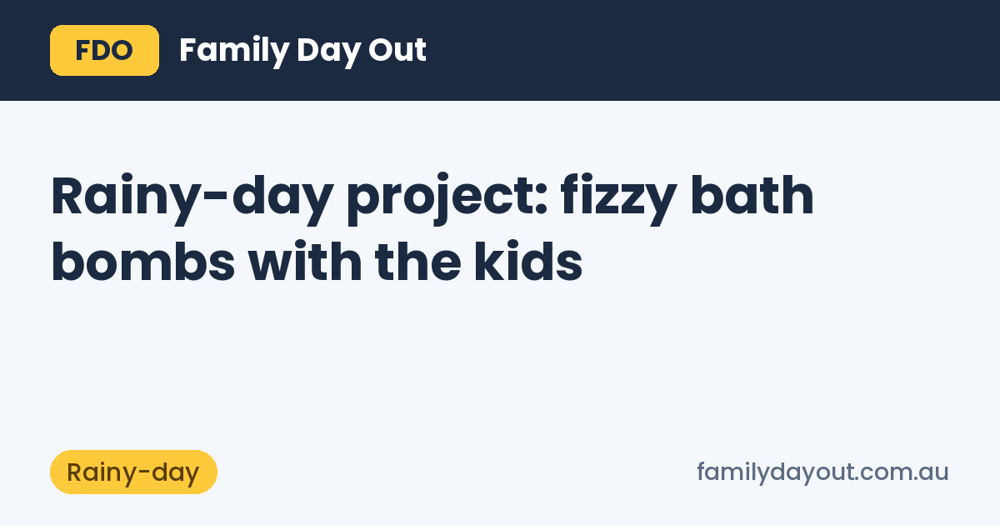

Rainy-day project: fizzy bath bombs with the kids

When the weather turns and the playground is a puddle, bath bombs are a good indoor project. Kids get to measure, mix, squash and mould, and at bath time they get to watch the fizz. A batch takes about 30 minutes to make and a day to dry.
What you need
For about six small bath bombs:
- 1 cup sodium bicarbonate (bicarb soda)
- ½ cup citric acid
- ½ cup corn starch (it slows the fizz and gives a silky feel)
- 2 tablespoons of a light carrier oil, such as sunflower oil or apricot kernel oil
- A small handful of dried red rose petals
- A spray bottle of water
- Moulds: silicone muffin trays, plastic Easter-egg halves or a round cookie cutter
All of these come from N-essentials in Keysborough, which has click and collect on weekdays. Bicarb and corn starch from the supermarket work too.
How to make them
- Dry mix. Put the bicarb, citric acid and corn starch in a big bowl. Let the kids break up any lumps with their fingers or a whisk. This is the fun, messy part.
- Add the oil. Drizzle the oil in slowly while someone stirs. The mix should feel like damp sand.
- Spritz, don't pour. Spray two or three squirts of water and mix straight away. Water makes it fizz, so go slowly. Stop when a handful holds its shape when squeezed.
- Petals first. Drop a few rose petals into the bottom of each mould, then pack the mix in firmly. Press hard: loose bath bombs crumble.
- Dry. Leave them in the moulds for a couple of hours, then tip them out onto a tray and let them dry overnight somewhere that isn't humid (not the bathroom).
Store them in an airtight jar and use within a few weeks.
Do you need essential oils?
No. Plain bath bombs smell clean and fizz just as well. For kids under 6, leave essential oils out completely.
For older kids, you can add a scent, but keep it small: 2 or 3 drops for the whole batch, mixed into the oil before it goes in. Gentle choices are bergamot (N-essentials' version is bergapten-free) or cedarwood. Skip strong oils like rosemary and lemongrass in kids' baths. You can browse the full essential oils range and carrier oils range if you want to experiment as a grown-up.
Keeping it safe
- An adult handles the citric acid. It's a fine powder that stings if it gets in eyes or a cut.
- Keep the mix away from mouths. It isn't food, even though it looks like icing.
- Bath bombs are for kids aged 3 and up. Babies and toddlers can have a plain bath.
- Rose petals float, so scoop them out before you pull the plug to save the drain.
- If anyone's skin goes red or itchy, rinse with plain water and leave bath bombs out next time.
More rainy-day ideas
Bath bombs fill an afternoon at home. If you'd rather get out, see rainy-day places near Keysborough or search your own suburb at the top of the page for indoor play, libraries and pools.